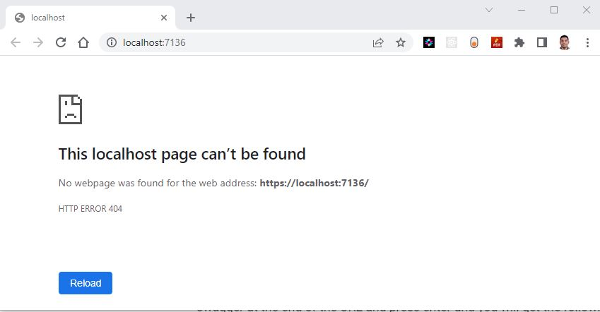
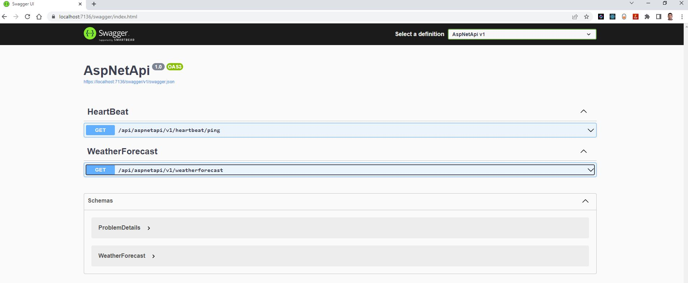
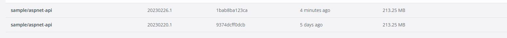
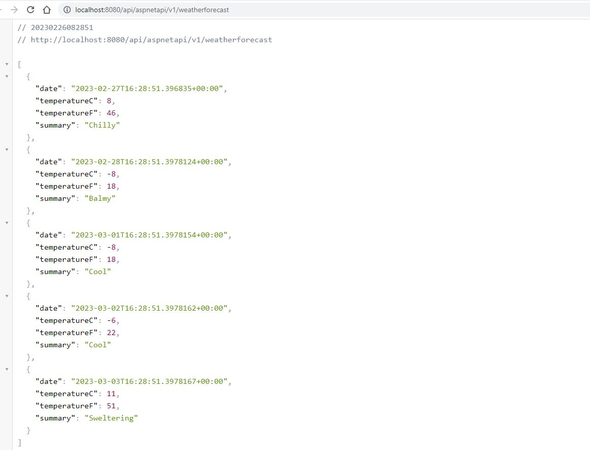
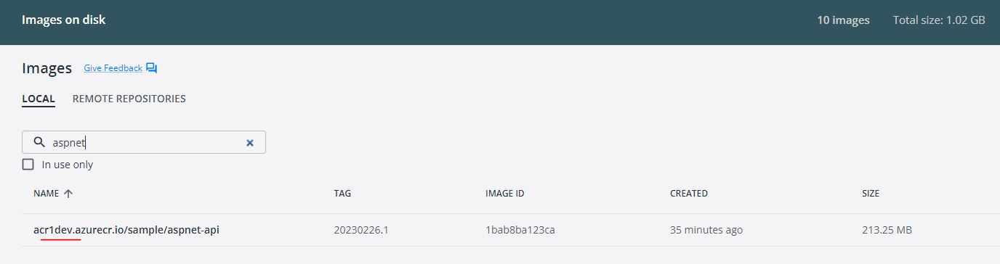
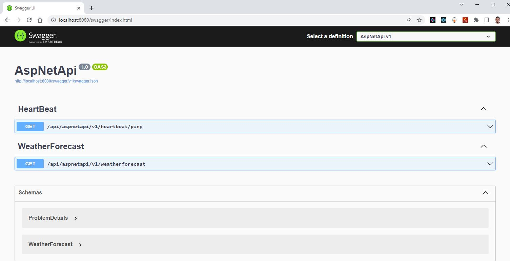

Prepare an application for Azure Kubernetes Service (AKS)
Introduction
Getting your application ready to run on Azure Kubernetes Service (AKS) involves a series of steps to ensure a smooth deployment. Here's an overview of the process:
1. Create a new .NET Core Web API project: Start by creating a new .NET Core Web API project. Think of it as a foundation for your app.
2. Containerization of your application: Start by containerizing your application. Containerization allows your application to run consistently across different environments.
3. Pushing the containerized application to Azure Container Registry (ACR): To make your container image accessible to AKS, you need to store it in a container registry like Azure Container Registry (ACR).
Objective
In this exercise, our objective is to accomplish and learn the following tasks:
- Step-1: Create a new .NET Core Web API project
- Step-2: Test the new .NET core Web API project
- Step-3: Add Dockerfiles to the API project
- Step-4: Build & Test docker container locally
- Step-5: Publish docker container to ACR
- Step-6: Pull docker container from ACR
Prerequisites
- Download & Install the .NET Core SDK - https://dotnet.microsoft.com/en-us/download
- Create an Azure DevOps Repository
- Clone the Repository
- Azure Container Registry
- Docker desktop installed - https://www.docker.com/get-started/
Implementation details
Here is the step by step implementation details of getting application ready to run on Azure Kubernetes Service (AKS)
Step-1: Create a new .NET Core Web API project
To create a new .NET Core Web API project, you will need to have the .NET Core SDK installed on your machine. You can download the .NET Core SDK from the .NET website https://dotnet.microsoft.com/download.
Once you have the .NET Core SDK installed, follow these steps to create a new .NET Core Web API project:
- Open a terminal window and navigate to the directory where you want to create your project.
- Run the
dotnet newcommand to create a new .NET Core Web API project: Let's take a look some usefuldotnetcommand before creating the project. Use this command to get thedotnetcommands help so that your get idea on how use these commands better. Use this command to get list of availabledotnetproject templates output
These templates matched your input:
Template Name Short Name Language Tags
-------------------------------------------- ------------------- ---------- -------------------------------------
ASP.NET Core Empty web [C#],F# Web/Empty
ASP.NET Core gRPC Service grpc [C#] Web/gRPC
ASP.NET Core Web API webapi [C#],F# Web/WebAPI
ASP.NET Core Web App razor,webapp [C#] Web/MVC/Razor Pages
ASP.NET Core Web App (Model-View-Controller) mvc [C#],F# Web/MVC
ASP.NET Core with Angular angular [C#] Web/MVC/SPA
ASP.NET Core with React.js react [C#] Web/MVC/SPA
ASP.NET Core with React.js and Redux reactredux [C#] Web/MVC/SPA
Blazor Server App blazorserver [C#] Web/Blazor
Blazor WebAssembly App blazorwasm [C#] Web/Blazor/WebAssembly/PWA
Class Library classlib [C#],F#,VB Common/Library
Console App console [C#],F#,VB Common/Console
.
.
and more....
dotnet new webapi -o aspnetapi
or
dotnet new webapi -o aspnetapi --no-https -f net7.0
cd aspnetapi
code .
or
code -r ../aspnetapi
C:\WINDOWS\system32>cd C:\Source\Repos
C:\Source\Repos>dotnet new webapi -o aspnetapi
The template "ASP.NET Core Web API" was created successfully.
Processing post-creation actions...
Running 'dotnet restore' on C:\Source\Repos\aspnetapi\aspnetapi.csproj...
Determining projects to restore...
Restored C:\Source\Repos\aspnetapi\aspnetapi.csproj (in 247 ms).
Restore succeeded.
C:\Source\Repos>cd aspnetapi
C:\Source\Repos\aspnetapi>code .
Step-2: Test the new .NET core Web API project
- Run the following command to build the project:
dotnet buildcommand will look for the project or solution file in the current directory and compile the code in it. It will also restore any dependencies required by the project and create the output files in the bin directory. outputMicrosoft (R) Build Engine version 17.0.1+b177f8fa7 for .NET Copyright (C) Microsoft Corporation. All rights reserved. Determining projects to restore... All projects are up-to-date for restore. AspNetApi -> C:\Source\Repos\AspNetApi\aspnet-api\bin\Debug\net6.0\AspNetApi.dll Build succeeded. 0 Warning(s) 0 Error(s) Time Elapsed 00:00:01.51 - Run the following command to start the development server:
dotnet runcommand will look for the project or solution file in the current directory and compile the code in it. After compiling, it will run the application and any output will be displayed in the console. outputYou will notice the URL in the output, copy the URL and paste it in your favorite browser. you will get aBuilding... info: Microsoft.Hosting.Lifetime[14] Now listening on: https://localhost:7136 info: Microsoft.Hosting.Lifetime[14] Now listening on: http://localhost:5136 info: Microsoft.Hosting.Lifetime[0] Application started. Press Ctrl+C to shut down. info: Microsoft.Hosting.Lifetime[0] Hosting environment: Development info: Microsoft.Hosting.Lifetime[0] Content root path: C:\Source\Repos\AspNetApi\aspnet-api\404 error.don’t worry. Just type swagger at the end of the URL and press enter and you will get the following webpage.

-
https://localhost:7136/swagger/index.html - Swagger URL
-
https://localhost:7136/api/aspnetapi/v1/weatherforecast - API endpoint URL
If you are able to see this swagger URL in your browser then everything is created and setup as expected.

Use the following command to stop the application in VS Code
It is time to push your basic project template source into Azure DevOps Git repo.Use these git commands to push the source code.
Step-3: Add Dockerfiles to the API project
Dockerfiles will be added to the project, which provide instructions for building a container image of our Web API application.
There are multiple way to create Dockerfile depending on your code editor.
Here are the step-by-step instructions for creating a Dockerfile in a .NET Core Web API project:
- First, open your .NET Core Web API project in Visual Studio code or your favorite code editor.
- Next, create a new file in the root directory of your project and name it Dockerfile (with no file extension).
-
Open the Dockerfile and add the following code to the file:
This code defines a Docker image that is based on the aspnet:6.0 image from Microsoft's container registry. The image is divided into four stages:#See https://aka.ms/containerfastmode to understand how Visual Studio uses this Dockerfile to build your images for faster debugging. FROM mcr.microsoft.com/dotnet/aspnet:6.0 AS base WORKDIR /app EXPOSE 80 EXPOSE 443 FROM mcr.microsoft.com/dotnet/sdk:6.0 AS build WORKDIR /src COPY ["AspNetApi.csproj", "."] RUN dotnet restore "./AspNetApi.csproj" COPY . . WORKDIR "/src/." RUN dotnet build "AspNetApi.csproj" -c Release -o /app/build FROM build AS publish RUN dotnet publish "AspNetApi.csproj" -c Release -o /app/publish FROM base AS final WORKDIR /app COPY --from=publish /app/publish . ENTRYPOINT ["dotnet", "AspNetApi.dll"] -
base:sets up the working directory and exposes port 80. build:restores the project dependencies, builds the project in Release mode, and copies the build output to the /app/build directory.publish:publishes the project in Release mode and copies the published output to the /app/publish directory.final:sets the working directory to/appand copies the published output from thepublishstage to the current directory. It also specifies the entry point for the container, which is thedotnetcommand with the name of your project's DLL file.
Step-4: Build & Test docker container locally
We will build the Docker container locally using the Dockerfiles and ensure that the containerized application functions as expected.
docker build is a command that allows you to build a Docker image from a Dockerfile. The Dockerfile is a text file that contains instructions for Docker to build the image, including the base image to use, the files to include, the commands to run, and the ports to expose.
To build and publish a container image for a .NET Core Web API project, you will need to have Docker installed on your machine. You can download Docker from the Docker website https://www.docker.com/get-started.
Once you have Docker installed, follow these steps to build and publish a container for your .NET Core Web API project:
- Open a terminal window and navigate to the root of the project.
- Run the
docker buildcommand to build the Docker image: output Verify the new image
if you open the docker desktop you should be able to see the newly created image there.

3. Run the docker run command to start a container based on the image:
info: Microsoft.Hosting.Lifetime[14]
Now listening on: http://[::]:80
info: Microsoft.Hosting.Lifetime[0]
Application started. Press Ctrl+C to shut down.
info: Microsoft.Hosting.Lifetime[0]
Hosting environment: Production
info: Microsoft.Hosting.Lifetime[0]
Content root path: /app/
Open a web browser and navigate to http://localhost:8080/api/values (or whatever URL corresponds to your Web API endpoint) to confirm that the Web API is running inside the Docker container.
use these links for testing when you run docker command from vs code
- http://localhost:8080/swagger/index.html
- http://localhost:8080/api/aspnetapi/v1/heartbeat/ping
- http://localhost:8080/api/aspnetapi/v1/weatherforecast

Best-practice
When working with Docker containers, it is recommended to follow a consistent naming convention to ensure clarity and organization. The following pattern is suggested for naming Docker containers:
docker build -t projectname/domainname/appname:yyyymmdd.sequence .
example:
docker build -t project1/sample/aspnet-api:20230226 .
You've successfully created a Dockerfile and built a Docker image for your .NET Core Web API project. You can now distribute the Docker image to other machines or deploy it to a cloud service like Azure or AWS.
Step-5: Publish docker container to ACR
Finally, we will publish the built Docker container to the Azure Container Registry (ACR), making it accessible for deployment and distribution.
Now we've Docker Containers ready for push to Container Registry so that we can use them in future labs.
To publish a Docker container image to Azure Container Registry (ACR), you will need to have the following:
- Create an Azure Container Registry. If you don't have one, you can create one by following the instructions in the Azure Portal or using Azure CLI. As part of the Chapter-2 we will create this azure resource, you can come back to this steps after ACR is created.
- Log in to your Azure Container Registry using the Docker command-line interface. You can do this by running the following command:
# azure Login az login # set the azure subscription az account set -s "anji.keesari" # Log in to the container registry az acr login --name acr1dev # To get the login server address for verification az acr list --resource-group rg-acr-dev --query "[].{acrLoginServer:loginServer}" --output table # output should look similar to this. # AcrLoginServer # ------------------ # acr1dev.azurecr.io Tagyour Docker container with the full name of your Azure Container Registry, including the repository name and the version tag. You can do this by running the following command: Use this command to see a list of your current local images output- Push your Docker container to your Azure Container Registry using the Docker command-line interface. You can do this by running the following command:
output
The push refers to repository [acr1dev.azurecr.io/sample/aspnet-api] a592c2e20b23: Pushed 5f70bf18a086: Layer already exists d57ad0aaee3b: Layer already exists aff5d88d936a: Layer already exists b3b2bd456a19: Layer already exists 2540ef4bc011: Layer already exists 94100d1041b6: Layer already exists bd2fe8b74db6: Layer already exists 20230226.1: digest: sha256:026ec79d24fca0f30bcd90c7fa17e82a2347cf7bc5ac5d762a630277086ed0d1 size: 1995 - Wait for the push to complete. Depending on the size of your Docker container and the speed of your internet connection, this may take a few minutes.
- Verify the newly pushed image to ACR. output
- Show the new tags of a image in the acr output
You've successfully pushed your Docker container to Azure Container Registry. You can now use the Azure Portal or Azure CLI to manage your container and deploy them to Azure services like Azure Kubernetes Service (AKS).
Step-6: Pull docker container from ACR
Pull docker container from ACR is something may be helpful during container troubleshooting.
To pull a Docker container from Azure Container Registry (ACR), you need to perform the following steps:
- Log in to your Azure Container Registry using the Docker command-line interface. You can do this by running the following command:
- Pull your Docker container from your Azure Container Registry using the Docker command-line interface. You can do this by running the following command:
output
20230226.1: Pulling from sample/aspnet-api 01b5b2efb836: Already exists c4c81489d24d: Already exists 95b82a084bc9: Already exists bb369c4b0f26: Already exists c888ac593815: Already exists 14ce87409b2e: Already exists 4f4fb700ef54: Already exists d15d1be868b7: Already exists Digest: sha256:026ec79d24fca0f30bcd90c7fa17e82a2347cf7bc5ac5d762a630277086ed0d1 Status: Downloaded newer image for acr1dev.azurecr.io/sample/aspnet-api:20230226.1 acr1dev.azurecr.io/sample/aspnet-api:20230226.1 - Wait for the pull to complete. Depending on the size of your Docker container and the speed of your internet connection, this may take a few minutes. 
- Verify the recently pulled container from ACR to make sure it running as expected Test the container running following URL

http://localhost:8080/swagger/index.html
You've successfully pulled your Docker container from Azure Container Registry. You can now use the Docker command-line interface to manage your container and run them locally or deploy them to other environments.